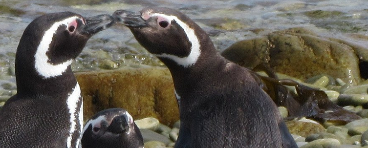
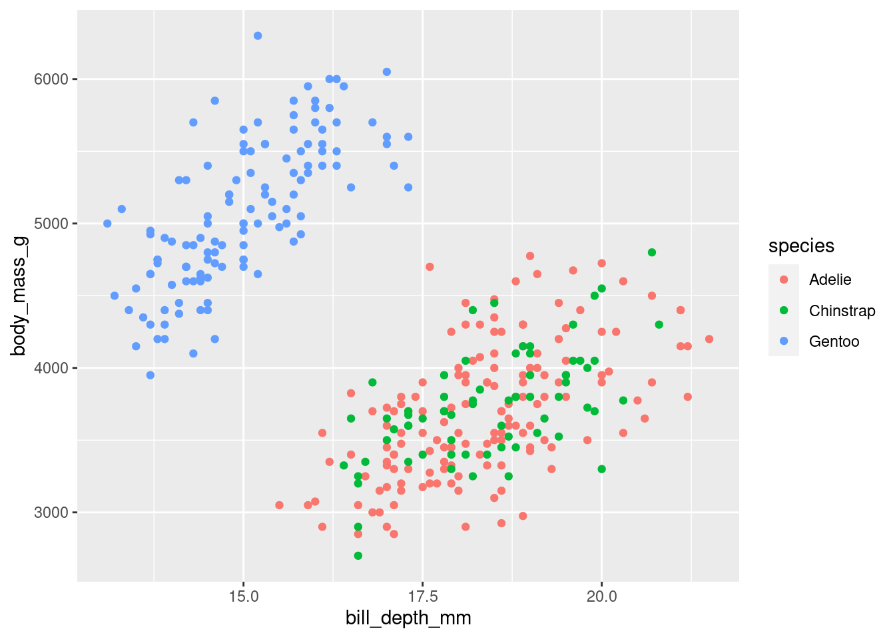
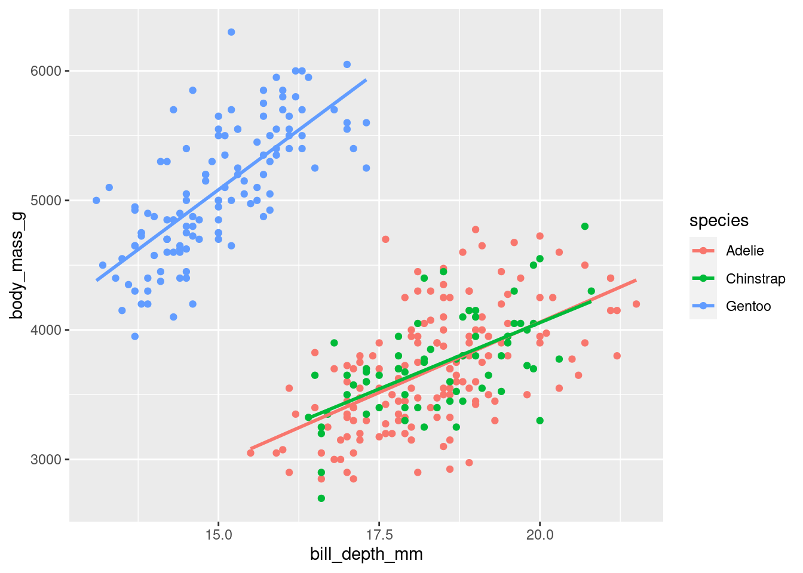
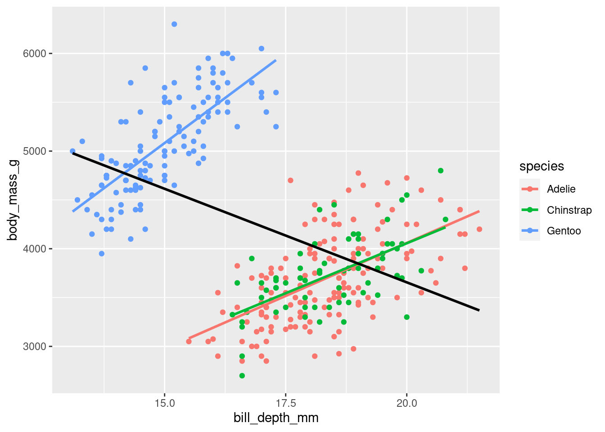

# install.packages("palmerpenguins")
library(palmerpenguins)
df <- palmerpenguins::penguins1 Intro
Vamos a utilizar datos del paquete palmerpenguins. El repo del paquete en CRAN está aquí, el repo de Github está aquí y la página web del paquete está aquí.
Los datos se pueden cargar en la memoria de de R/RStudio de esta forma:
El dataset contiene observaciones sobre un conjunto de 344 pingüinos de 3 especies. Hay 8 variables.
2 Los pingüinos molan
Vamos a ver una foto de un pingüinos

Sí, lo pingüinos molan, así que vamos a poner otra foto de pingüinos que tenemos en nuestro PC pero la vamos a poner en el margen:

3 Algunos gráficos
Bueno pues vamos a hacer algún gráfico, pero claro antes he de cargar los paquetes
Arreglo los datos
3.1 Primer gráfico
#- primer gráfico
p <- ggplot(data = df,
mapping = aes(x = bill_depth_mm, y = body_mass_g, color = species)) +
geom_point()
p
3.2 Segundo
#- segundo gráfico
p <- p + geom_smooth(method = "lm", se = FALSE)
p
3.3 El último
#- tercer gráfico
p + geom_smooth(method = "lm", se = FALSE, color = "black") 
Con esto acabo mi trabajo para BigData!!
Abajo muestro mi entorno de trabajo y paquetes utilizados
current session info
─ Session info ───────────────────────────────────────────────────────────────
setting value
version R version 4.2.1 (2022-06-23)
os Ubuntu 20.04.5 LTS
system x86_64, linux-gnu
ui X11
language (EN)
collate es_ES.UTF-8
ctype es_ES.UTF-8
tz Europe/Madrid
date 2022-11-18
pandoc 2.18 @ /usr/lib/rstudio/bin/quarto/bin/tools/ (via rmarkdown)
─ Packages ───────────────────────────────────────────────────────────────────
package * version date (UTC) lib source
assertthat 0.2.1 2019-03-21 [3] CRAN (R 4.0.0)
backports 1.4.1 2021-12-13 [3] CRAN (R 4.1.2)
broom 1.0.1 2022-08-29 [3] CRAN (R 4.2.1)
cellranger 1.1.0 2016-07-27 [3] CRAN (R 4.0.0)
cli 3.4.1 2022-09-23 [3] CRAN (R 4.2.1)
clipr 0.8.0 2022-02-22 [3] CRAN (R 4.1.2)
colorspace 2.0-3 2022-02-21 [3] CRAN (R 4.1.2)
crayon 1.5.2 2022-09-29 [3] CRAN (R 4.2.1)
DBI 1.1.3 2022-06-18 [3] CRAN (R 4.2.1)
dbplyr 2.2.1 2022-06-27 [3] CRAN (R 4.2.1)
desc 1.4.1 2022-03-06 [1] CRAN (R 4.2.0)
details 0.3.0 2022-03-27 [1] CRAN (R 4.2.1)
digest 0.6.30 2022-10-18 [1] CRAN (R 4.2.1)
dplyr * 1.0.10 2022-09-01 [1] CRAN (R 4.2.1)
ellipsis 0.3.2 2021-04-29 [3] CRAN (R 4.0.5)
evaluate 0.17 2022-10-07 [3] CRAN (R 4.2.1)
fansi 1.0.3 2022-03-24 [3] CRAN (R 4.1.3)
farver 2.1.1 2022-07-06 [3] CRAN (R 4.2.1)
fastmap 1.1.0 2021-01-25 [3] CRAN (R 4.0.3)
forcats * 0.5.2 2022-08-19 [3] CRAN (R 4.2.1)
fs 1.5.2 2021-12-08 [3] CRAN (R 4.1.2)
generics 0.1.3 2022-07-05 [3] CRAN (R 4.2.1)
ggplot2 * 3.3.6 2022-05-03 [3] CRAN (R 4.2.0)
glue 1.6.2 2022-02-24 [3] CRAN (R 4.1.2)
gtable 0.3.1 2022-09-01 [1] CRAN (R 4.2.1)
haven 2.5.1 2022-08-22 [3] CRAN (R 4.2.1)
hms 1.1.2 2022-08-19 [3] CRAN (R 4.2.1)
htmltools 0.5.3 2022-07-18 [3] CRAN (R 4.2.1)
htmlwidgets 1.5.4 2021-09-08 [1] CRAN (R 4.2.0)
httr 1.4.4 2022-08-17 [3] CRAN (R 4.2.1)
jsonlite 1.8.3 2022-10-21 [1] CRAN (R 4.2.1)
knitr 1.40 2022-08-24 [1] CRAN (R 4.2.1)
labeling 0.4.2 2020-10-20 [3] CRAN (R 4.0.3)
lattice 0.20-45 2021-09-22 [4] CRAN (R 4.2.0)
lifecycle 1.0.3 2022-10-07 [3] CRAN (R 4.2.1)
lubridate 1.8.0 2021-10-07 [3] CRAN (R 4.1.1)
magrittr 2.0.3 2022-03-30 [3] CRAN (R 4.1.3)
Matrix 1.5-1 2022-09-13 [4] CRAN (R 4.2.1)
mgcv 1.8-40 2022-03-29 [4] CRAN (R 4.1.3)
modelr 0.1.9 2022-08-19 [3] CRAN (R 4.2.1)
munsell 0.5.0 2018-06-12 [3] CRAN (R 4.0.0)
nlme 3.1-160 2022-10-10 [4] CRAN (R 4.2.1)
palmerpenguins * 0.1.0 2020-07-23 [1] CRAN (R 4.2.0)
pillar 1.8.1 2022-08-19 [3] CRAN (R 4.2.1)
pkgconfig 2.0.3 2019-09-22 [3] CRAN (R 4.0.0)
png 0.1-7 2013-12-03 [1] CRAN (R 4.2.0)
purrr * 0.3.5 2022-10-06 [3] CRAN (R 4.2.1)
R6 2.5.1 2021-08-19 [3] CRAN (R 4.1.1)
readr * 2.1.3 2022-10-01 [3] CRAN (R 4.2.1)
readxl 1.4.1 2022-08-17 [3] CRAN (R 4.2.1)
reprex 2.0.2 2022-08-17 [3] CRAN (R 4.2.1)
rlang 1.0.6 2022-09-24 [1] CRAN (R 4.2.1)
rmarkdown 2.17 2022-10-07 [3] CRAN (R 4.2.1)
rprojroot 2.0.3 2022-04-02 [1] CRAN (R 4.2.0)
rstudioapi 0.14 2022-08-22 [3] CRAN (R 4.2.1)
rvest 1.0.3 2022-08-19 [3] CRAN (R 4.2.1)
scales 1.2.1 2022-08-20 [3] CRAN (R 4.2.1)
sessioninfo 1.2.2 2021-12-06 [1] CRAN (R 4.2.0)
stringi 1.7.8 2022-07-11 [3] CRAN (R 4.2.1)
stringr * 1.4.1 2022-08-20 [3] CRAN (R 4.2.1)
tibble * 3.1.8 2022-07-22 [1] CRAN (R 4.2.1)
tidyr * 1.2.1 2022-09-08 [3] CRAN (R 4.2.1)
tidyselect 1.2.0 2022-10-10 [3] CRAN (R 4.2.1)
tidyverse * 1.3.1 2021-04-15 [1] CRAN (R 4.2.0)
tzdb 0.3.0 2022-03-28 [3] CRAN (R 4.1.3)
utf8 1.2.2 2021-07-24 [3] CRAN (R 4.1.0)
vctrs 0.5.0 2022-10-22 [1] CRAN (R 4.2.1)
withr 2.5.0 2022-03-03 [3] CRAN (R 4.1.3)
xfun 0.34 2022-10-18 [1] CRAN (R 4.2.1)
xml2 1.3.3 2021-11-30 [3] CRAN (R 4.1.2)
yaml 2.3.6 2022-10-18 [1] CRAN (R 4.2.1)
[1] /home/pjpv/R/x86_64-pc-linux-gnu-library/4.2
[2] /usr/local/lib/R/site-library
[3] /usr/lib/R/site-library
[4] /usr/lib/R/library
──────────────────────────────────────────────────────────────────────────────